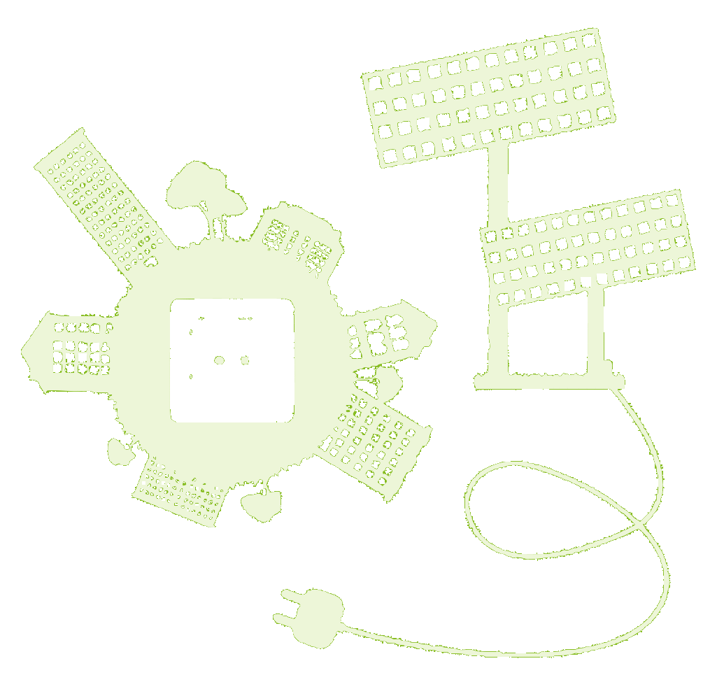

The Challenge
While solar energy is a promising start to solving the worldwide energy crisis, the collection and storage of solar energy is currently inefficient. Solar cells that utilize conventional energy sources do not last as long and are subject to the flaws of shallow-cycle batteries, which are ubiquitous in car batteries, laptops, and other major electronics. In order to subvert this issue scientists have used deep-cycle batteries as an alternative. Unlike shallow-cycle batteries, deep-cycle batteries discharge their stored energy over a long period of time. When starting a car, the shallow-cycle battery discharges a large amount of energy immediately then recharges, but this is disadvantageous for solar panels, because they cannot hold sufficient amounts of energy at a given time. Two examples of commonly-used deep-cycle batteries include lead-acid batteries and nickel-cadmium batteries, but these feature disadvantages. Nickel-cadmium batteries possess a �memory effect�, meaning they lose the ability to hold a proper charge after a long period of time- clearly insufficient when one desires long-lasting energy production and capacitation. Lead-acid batteries do not succumb to the memory effect, but they harbor extreme environmental concerns and thus are not a superior alternative in the long-run. Graphene�s high energy density and relatively small size, combined with the capabilities of porous silicon. provide a much cleaner and more elegant solution to this energy issue.